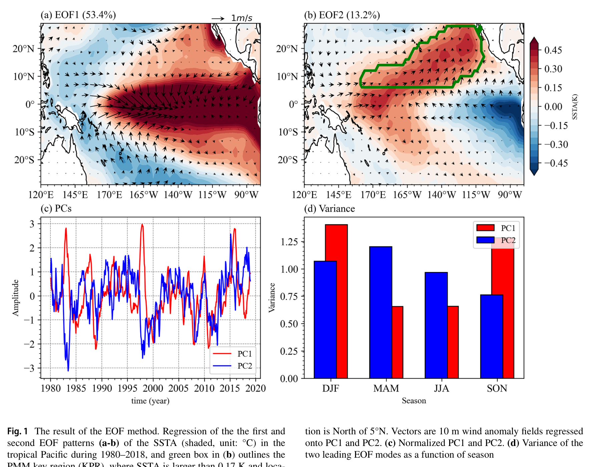
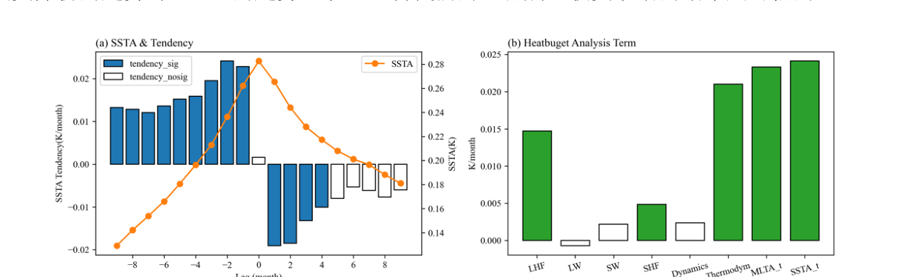
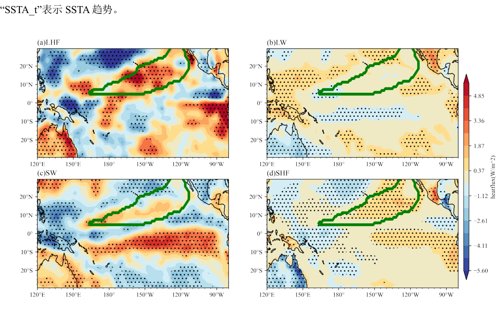
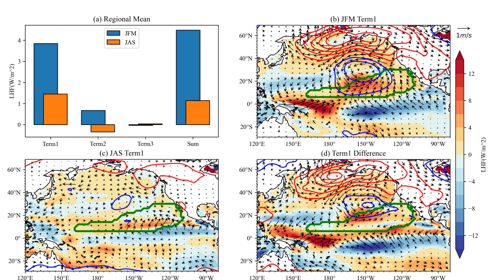
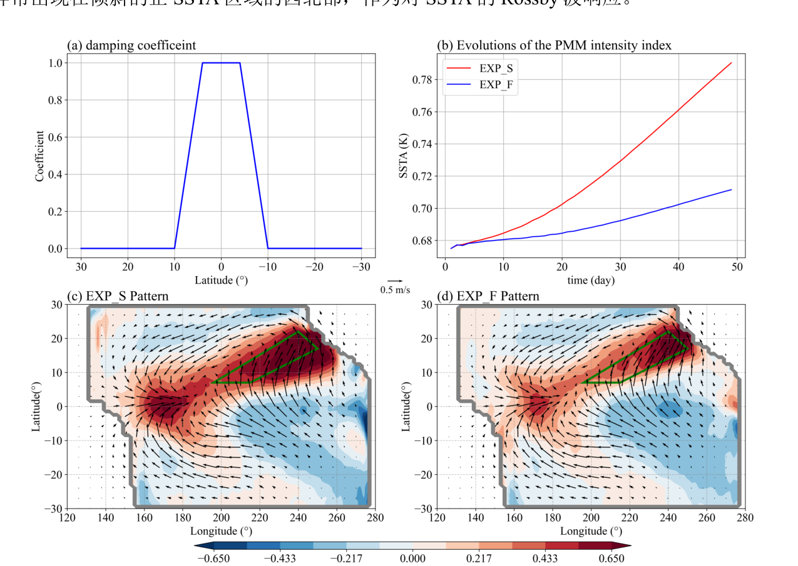
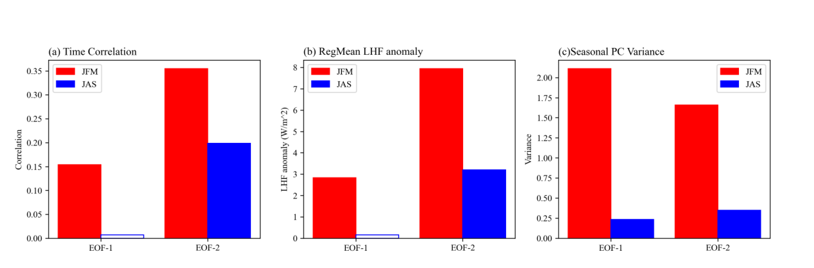
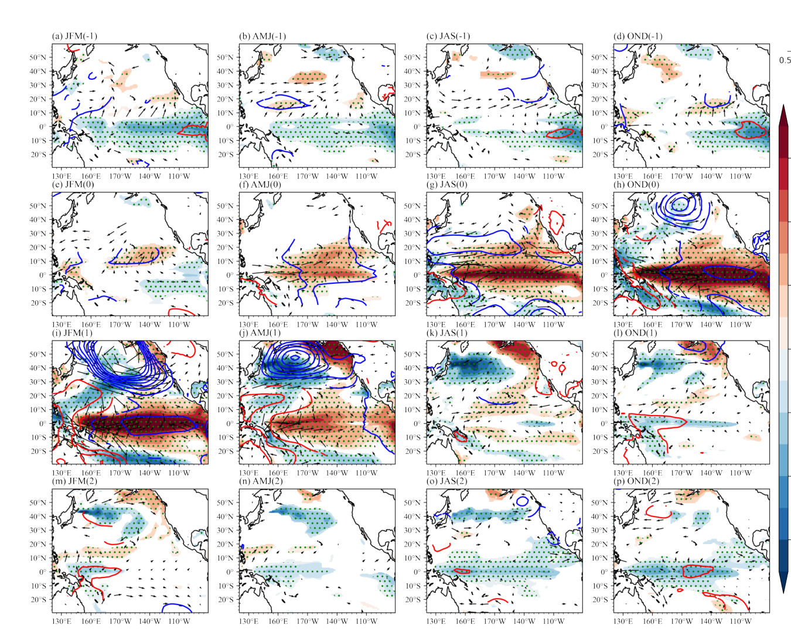
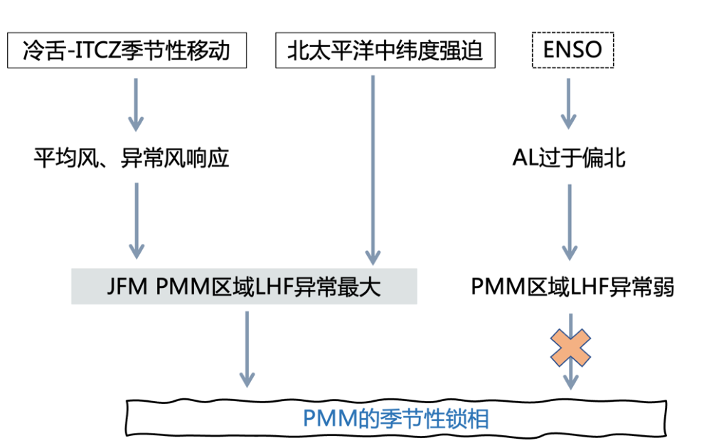

混合层热收支诊断
利用 HadISST、NCEP2 与 GODAS 数据，计算 PMM 生命周期中各项海温变化率的贡献，并对潜热通量进行线性分解，区分异常风与海气比湿差的作用。
厄尔尼诺并不是一夜之间出现的，它有一串“前奏”。
太平洋经向模（Pacific Meridional Mode，PMM）是热带和副热带中东太平洋的一个海气耦合模态。它最鲜明的特征，是一个从美国加利福尼亚湾延伸至赤道中太平洋、呈东北—西南走向的海表温度异常带。
当正 PMM 发生时，异常西南风抵消平均东北信风，海面蒸发随之减少，海温升高；升高的海温又进一步削弱信风。这个自我强化的过程被称为风—蒸发—海温反馈（Wind–Evaporation–SST feedback，WES）。
PMM 不仅是 ENSO 的重要前兆，还与西北太平洋热带气旋、中国夏季极端高温以及跨大西洋—太平洋的年代际变化有关。因此，它何时发展、为何发展，直接关系到我们对季节气候可预报性的理解。

问题由此而来：为什么偏偏是春季？
从观测诊断到理想化实验，每一步都尽量只改变一个因素。
利用 HadISST、NCEP2 与 GODAS 数据，计算 PMM 生命周期中各项海温变化率的贡献，并对潜热通量进行线性分解，区分异常风与海气比湿差的作用。
在 ECHAM 模式中，分别给春季与秋季施加完全相同的 PMM 加热场，比较大气风场和潜热通量的响应——只看大气背景态带来的季节差异。
在 Cane–Zebiak 型模式中分别指定春、秋季平均态，再加入相同的 PMM 型初始扰动，直接比较扰动增长率。
分析 AL 与 NPO 两个北太平洋大气模态，并使用热带太平洋起搏器实验（POGA）检验 ENSO 是否会“倒过来”制造 PMM 的春季偏好。
答案不是单一机制，而是一组在春季同时对齐的物理过程。
混合层热收支显示，PMM 在成熟期前两个月增长最快，主要驱动力是表面潜热通量异常。进一步分解表明，关键项来自异常风与平均风的相互作用：异常西南风抵消东北信风，减少蒸发并加热海洋表面；海气比湿差项则倾向于抑制增长。


在 ECHAM 实验中，春、秋季接收完全相同的 PMM 加热，但春季产生的异常风与正潜热通量响应明显更强。春季异常覆盖整个 PMM 关键区域，秋季则主要局限于南部。这说明大气背景态本身就在“偏爱”春季。

中间海气耦合模式给出了最直观的对比：春季背景态下 PMM 增长率为1.1 K/年，秋季仅为0.3 K/年；冬季和夏季介于两者之间。

北太平洋海平面气压的两个主模态——阿留申低压（AL）模态和北太平洋涛动（NPO）模态——在春季与两个月后的 PMM 都有更强联系。NPO 的南北偶极结构能在 PMM 关键区激发更强的西南风，因此比位置偏北的 AL 模态更有效。

POGA 起搏器实验包含 10 个成员、约 200 个样本。结果显示，在被独立约束的 ENSO 演化过程中，并没有出现显著的 PMM 信号；ENSO 激发的阿留申低压也过于偏北，无法有效作用于 PMM 关键区。
从冷舌到信风，一条完整的物理链条。
北太平洋 SLP 第一模态，以阿留申群岛附近的低压中心为特征。由于中心位置偏北，其异常风和潜热通量对 PMM 关键区的覆盖有限。
北太平洋 SLP 第二模态，呈南北偶极结构。南侧低压可在副热带 PMM 区域激发强烈西南风，因此与 PMM 的联系更紧密。
两种模态在春季的方差更大，与两个月后 PMM 的相关也更显著。换句话说，春季不仅热带背景态更有利，来自中纬度的“点火信号”也更强。
起搏器实验给出了否定答案。
观测合成中，PMM 常出现在 ENSO 事件发生前一年的春季。但这并不能自动证明 ENSO 导致了 PMM：两者存在双向作用，很难仅凭观测分离因果。
因此，研究采用热带太平洋起搏器实验，将热带东太平洋 SST 约束为观测值，从而单独提取 ENSO 强迫。结果是：ENSO 演化中没有显著 PMM 信号，相应的大气遥相关位置也不足以在 PMM 关键区产生有效的西南风。
PMM 的春季偏好主要来自自身海气耦合动力学，而不是 ENSO 的附属效应。

PMM 是厄尔尼诺的重要前兆信号，其季节锁相直接影响它能否有效触发后续 ENSO。研究把春季优势分解为背景平均态、大气响应和中纬度遥相关三种协同机制，并排除了 ENSO “倒因”的干扰。
从热收支定位关键过程，再用不同复杂度的模型逐个验证假说，这一框架也适用于 ENSO、IOD 等其他季节锁相问题。
AGCM、中间耦合模式与 POGA 起搏器分别控制不同变量，把四种潜在机制拆得足够干净。

这项研究源自孟子路的本科毕业论文，2023 年 5 月完成于南京信息工程大学长望学院大气科学实验班，指导教师为 Tim Li（李天明）教授。
工作覆盖观测诊断、理想化大气模式、中间海气耦合模式和热带太平洋起搏器实验四个层次。本科阶段完成这样一套系统研究，并最终发表于 Climate Dynamics，背后是清晰的控制变量思路和扎实的物理分析。
论文分析代码已完整开源：github.com/ZiluM/PMMPhaseLocking